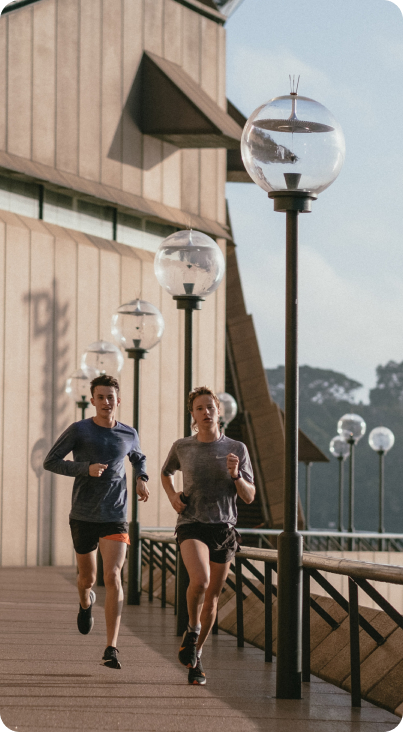

konten
Masa sih ga tau manfaat
dari olahraga
dari olahraga
Mungkin kamu bisa
mencoba jogging
mencoba jogging
Jogging adalah olahraga sederhana yang memberikan sejumlah manfaat signifikan bagi kesehatan fisik dan mental. Salah satu manfaat utamanya adalah meningkatkan kesehatan jantung dan sistem peredaran darah. Dengan berjoging


kenapa harus olahraga
menjaga berat badan
mencegah penyakit
membentuk masa otot


pertanyaan
Berapa kali kamu push-up hari ini
jawab pertanyaan diatas dengan mengisi dibawah ini